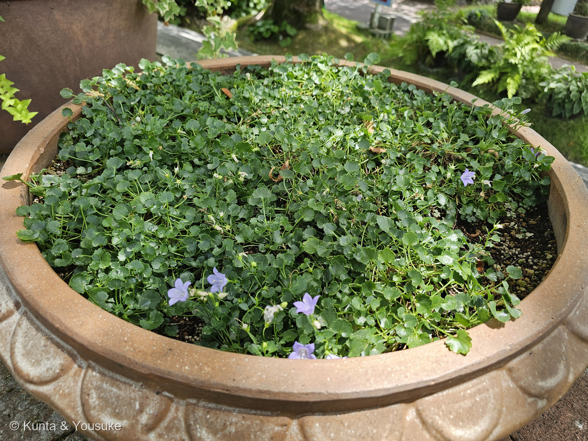
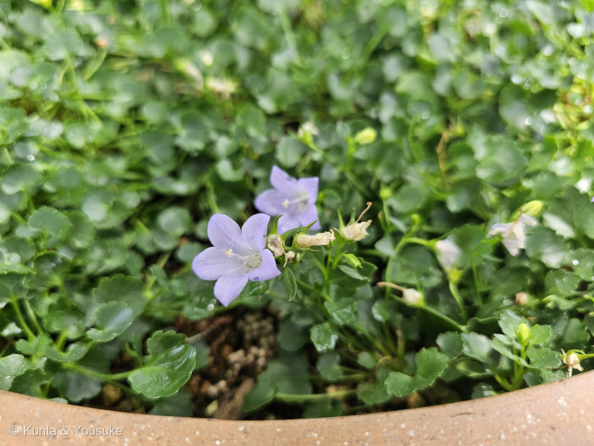
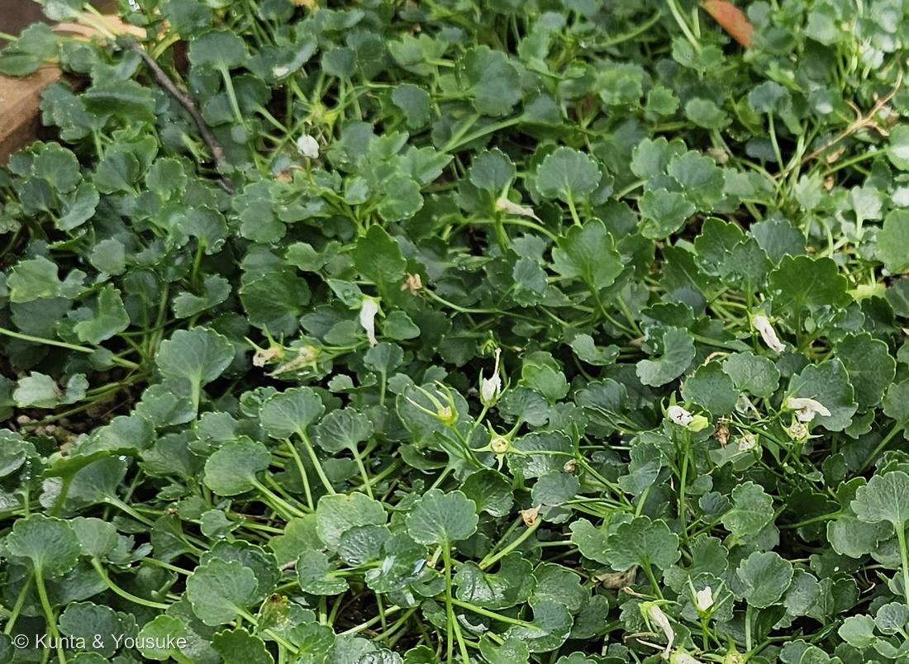
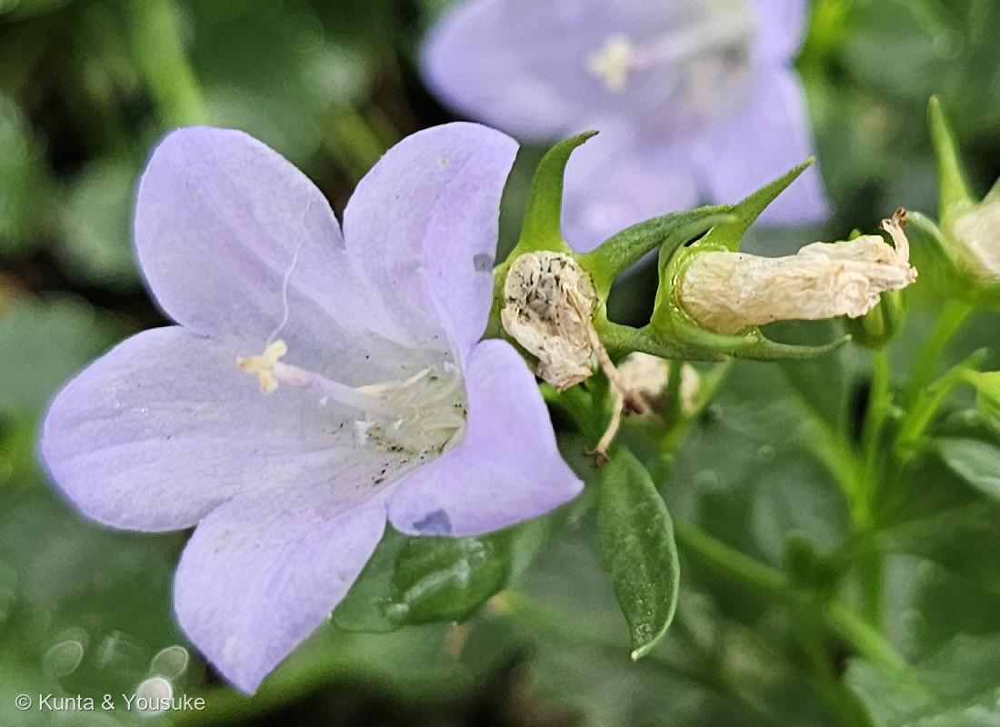

地図を読み込んでいるよ…
🔍 写真も地図も、押しているあいだ拡大して見られるよ（スマホは指を置いてすこし待ってね）。
🌍 の地図＝この子がもともと自生している場所を緑に。ディナル・アルプス（旧ユーゴスラビア＝いまのクロアチア・ボスニア・ヘルツェゴビナのあたり）。⚠出典が割れているので、くわしくは下の地図の説明を見てね。
⭐バルカン半島の山の草だよ。英語版Wikipediaは「native to the Dinaric Alps in former Yugoslavia」とする＝⭐ディナル・アルプス＝アドリア海にそって南北にのびる山なみ。⭐ここではクロアチア・ボスニア・ヘルツェゴビナ・モンテネグロ・セルビアを塗った＝日本語の観察記事も「クロアチア及びボスニア・ヘルツェゴビナ原産」とする／⭐英名の Serbian bellflower（セルビアのつりがね草）も、この地域を指しているね。⚠⚠ただし出典が割れている＝かぎけん花図鑑は「ルーマニア南部」とする――⭐ぼくは、英語版Wikipediaと日本語の観察記事が合っているほうを採って、ルーマニアは塗らなかった＝⭐ちがう読み方をしたので、正直に書いておくね。⚠そして、この緑は国ぜんぶではない＝この子は山の岩場の草なので、ほんとうにいるのは山なみの岩のすきま。⭐⭐日本が緑じゃないのも大事＝この子は園芸で入ってきた草――⚠ある観察記事は「栽培されている家から飛び出して周囲のスキマによく生えている」と書いている＝⏳石垣のすきまを見てみてほしいな。⭐⭐おまけのホタルブクロは同じ属の日本の野草＝⭐ホタルブクロ属は北半球に広くいて、日本にもヨーロッパにも、それぞれの顔がいるんだ。⭐同じキキョウ科の228 キキョウは東アジアの草＝⚠あちらはキキョウ属で一属一種だよ。
⚠ 地図は国（日本と中国だけ県・省）までしか塗れないから、ほんとうの分布より広く見えていることがあるよ。地図はだいたいの場所。正確なところは、上の文を見てね。
カンパヌラ・ポシャルスキアナ（ホシギキョウ・星桔梗）
Campanula poscharskyana Degen
流通名 アルペンブルー ── 英名 Serbian bellflower（セルビアのつりがね草）・trailing bellflower（這うつりがね草） 原産 ディナル・アルプス（旧ユーゴスラビア）
キキョウ科 · Campanulaceae（ホタルブクロ属 Campanula・キク目 Asterales）── ⭐2人目のキキョウ科（228 キキョウ）／⭐⭐⭐ホタルブクロ属ははじめて＝日本のホタルブクロと同じ属だよ／⚠科は増えないので103科のまま
燻太さんの見立て「名札もなかったから名前はわからないよ。見た目は小柄なキキョウ？ 葉っぱは小さいけど光沢があって少しみずみずしい雰囲気。」── ⭐⭐⭐⭐科まで当たり。しかもこの子は、228 キキョウに置いてきた宿題にも、そっと答えてくれたんだ
⭐⭐ 名前と学名の由来 ──「小さな鐘」と「星」
- ⭐⭐⭐属名の Campanula は、ラテン語で「小さな鐘」。⭐つりがね形の花から来た名前だよ。⭐英名の bellflower（鐘の花）も、そのままだね。
- ⭐⭐⭐そして、この属の和名はホタルブクロ属＝⭐⭐日本のホタルブクロと同じ属なんだ。⭐山道や土手で見かける、あの大きな袋のような花の仲間だよ（⭐おまけにした）。
- ⭐⭐この子の和名はホシギキョウ（星桔梗）＝⭐花が深く裂けて、上から見ると星形に開くから。⭐「鐘」の属に「星」の名前がついた子、ということになる。
- ⭐流通名は「アルペンブルー」＝紫の花のもの。⭐白い花のものは「アルペンホワイト」として売られている。
- ⭐英名は Serbian bellflower（セルビアのつりがね草）と trailing bellflower（這うつりがね草）（英語版Wikipedia）＝⭐ふるさとと、暮らしかたが、そのまま名前になっている。
- ⚠⚠種小名 poscharskyana がだれにちなむのかは、ぼくが読めた出典には書かれていなかった。⭐命名者が Degen（デーゲン）だということまでは分かったよ。⭐人の名前らしい形をしているけれど、決めつけないでおくね。
⭐⭐ この植物のこと ── 春から秋まで咲きつづける、這う草
- ⭐ふるさとはディナル・アルプス＝英語版Wikipediaは「native to the Dinaric Alps in former Yugoslavia」とする＝⭐旧ユーゴスラビアの、いまのクロアチアやボスニア・ヘルツェゴビナのあたりの山だよ。
- ⚠⚠ここは出典が割れている＝かぎけん花図鑑は「ルーマニア南部」とする。⭐ぼくは、英語版Wikipediaと、日本語の記事（「クロアチア及びボスニア・ヘルツェゴビナ原産」）が合っているほうを採った＝⭐ちがう読み方をしたので、正直に書いておくね。
- ⭐大きさ＝這う茎は「about 20–25 cm long」で、花は「about 10 cm above the ground」（英語版Wikipedia）＝⭐つまり、花は地面から10cmほどのところに咲く。⭐燻太さんの「小柄な」は、そのとおりだよ。
- ⭐葉は「2.5–4.0 cm」（同）。
- ⭐⭐⭐そして、この子のいちばんの取り柄は花期の長さ＝「from mid-spring to early autumn」（同）／かぎけん花図鑑は「3〜9月」とする＝⭐春の半ばから秋のはじめまで、半年ちかく咲きつづける。
- ⭐半常緑の多年草で、丈夫なロックガーデンの草（同）＝⭐石垣のすきまや、鉢のふちからこぼれるように育てられる。
- ⚠⚠日本では、庭から逃げ出していることもあるみたい＝ある観察記事は「栽培されている家から飛び出して周囲のスキマによく生えている」「丈夫で繁殖力が強そう」と書いている。⏳通勤路の石垣のすきまを、こんど見てみてほしいな。
⭐ 同定について ── 名札が無いので、写真だけで
⚠ この鉢に名札は無かった。⭐前後のコマも見たけれど、どちらも別の場所だった。⭐だから260 シュロガヤツリや261 タカサゴユリと同じで、写真から言えることを、証拠の強い順にならべるね。
⭐⭐ まず、科と属は かなり確か。
- ⭐⭐⭐⭐花柱の先が3つに裂けている（写真④）＝⭐キキョウ科の、いちばん見やすい目じるし。
- ⭐⭐5つに裂けた鐘〜星形の花冠（写真②）＋細く尖った5枚の萼片。
- ⭐這ってマットになり、小さな葉を密につける（写真①③）。
- ⭐⭐ここまででキキョウ科ホタルブクロ属。⭐燻太さんの「小柄なキキョウ？」は、科まで当たっているよ。
⭐ そして種は、こう考えた。
- ⭐⭐⭐⭐いちばん強い＝花が深く裂けて、上から見ると星形に開く（写真②）。英国植物学会（Botanical Society of Scotland）が、ちょうどこの2種を比べてくれている＝ポシャルスキアナは「the corolla tube is more deeply cut and the petals are much more spreading, star-like from above」／オトメギキョウ（C. portenschlagiana）は「the corolla is funnel- to bell-shaped, lobed for about 1/2 of its length」。
- ⭐⭐⭐次に強い＝8月に咲いている＝ポシャルスキアナの花期は「from mid-spring to early autumn」（英語版Wikipedia）／「3〜9月」（かぎけん）――⚠いっぽうオトメギキョウは「4-5月の花期」（日本語版Wikipedia）＝⭐ここで大きく分かれる。
- ⭐⭐その次＝葉柄が長い（写真③）＝ミズーリ植物園はポシャルスキアナの葉を「long-stalked, oval-rounded to cordate」とする。
- ⭐そして＝強い匍匐性でマットになる＝「prostrate, sprawling perennial」（同）。⭐英名の trailing bellflower（這うつりがね草）そのもの。
- ⚠⚠落としきれない相手＝オトメギキョウ（C. portenschlagiana）／カンパヌラ・ガルガニカ（C. garganica）／そして、これらの園芸品種や交雑品種。⚠とくに園芸品種は、花の形も花期も動くことがある。
- ⭐⭐だから、こう書いておくね＝ポシャルスキアナと判断した。でも、品種のちがいまでは決められていない。⏳園芸店の苗の札と花を組にして撮ってきてもらえたら、もっと固まるよ。
⭐⭐⭐⭐ 燻太さんの「小柄なキキョウ？」── 当たっていて、しかも228の宿題に効いた
⭐⭐⭐ 燻太さんの言葉：「見た目は小柄なキキョウ？」。――⭐⭐科まで当たっている。⭐そして、この子は228 キキョウに置いてきた宿題にも、そっと答えてくれたんだ。
- ⭐まず、228 キキョウとは同じ科・ちがう属＝キキョウはキキョウ属（Platycodon）で一属一種、この子はホタルブクロ属（Campanula）。
- ⭐⭐⭐⭐そして、228にはこう書いてあった――燻太さんが「柱頭が3つに見える」と言い、数えなおしたら三つの花ぜんぶで3つだった。⚠ところが出典は「5裂」（三河）。
- ⭐そこでぼくはこう書いた＝「キキョウ科ぜんたいでは『3つ』も当たり前＝同じ科のホタルブクロは『花柱の先端が3つに割れて柱頭が露出する』」（福岡教育大学）。
- ⭐⭐⭐⭐⭐その「ホタルブクロ」と同じ属の子が、いま目の前にいる。――⭐そして写真④で、花柱の先ははっきり3つに裂けていた。
- ⭐⭐⭐つまり、228で文字だけで書いた「ホタルブクロ属は3裂」を、写真の実物で見せられるようになったということ。⚠これは228の疑問（キキョウ属じたいが3なのか5なのか）を解いたわけではないよ。⭐でも、「キキョウ科では3裂もふつうにある」の側に、実物が1つ立った。
- ⏳のこりの宿題は、228のときと同じ＝花がらの子房を横に切って、部屋の数を数えること。⚠園の鉢は切れないので、おまけのホタルブクロか、よそのカンパヌラでね。
⭐ 燻太さんの「光沢があって、みずみずしい雰囲気」
- ⭐⭐この一言も、そのまま写真③に写っている。――腎形〜円形の小さな葉が、細長い葉柄の先について、ふちには丸い鋸歯。⭐そして表面がつやつやしている。
- ⭐ミズーリ植物園はこの葉を「oval-rounded to cordate, medium green」とする＝丸みのある卵形から心形の、中くらいの緑。
- ⚠⚠ただし「なぜ光沢があるのか」を書いた出典は、ぼくは見つけられなかった。⭐岩場の草だから、乾きを防ぐ表面のつくりなのかもしれない――⚠でも、これはぼくの読みだよ。
- ⭐⭐そして「みずみずしい」のほうは、ほんとうに濡れていたのかもしれない＝⭐写真③をよく見ると、葉のあちこちに水滴が残っているんだ。⭐11時32分だから、朝の水やりのあとだったのかもしれないね。
⭐ 会えた場所 ── 園の鉢、ヘリコニアの30分まえ
- ⭐広島市植物公園の、屋外に置かれた大きな素焼きの鉢。⭐鉢いっぱいにマットのように広がって、ふちからこぼれそうになっていた。
- ⭐⭐2026年8月8日 11:32。⭐262 ヘリコニア（12:02）の30分まえだよ。⭐同じ日に、249 ビカクシダ・250 キソウテンガイ・254 タビビトノキにも会っている。
- ⚠名札は無かった。⭐でも、鉢に植えられて手入れされている子だから、園が「見せるために置いた」ものではあると思う。
- ⭐⭐鉢のふちからこぼれる姿は、この子の得意な見せ方＝英名 trailing bellflower（這うつりがね草）のとおりだね。
出典：英語版Wikipedia "Campanula poscharskyana"（学名と命名者 Degen／"native to the Dinaric Alps in former Yugoslavia"／英名 Serbian bellflower・trailing bellflower／這う茎が "about 20–25 cm long"・花が "about 10 cm above the ground"／葉が "2.5–4.0 cm"／"lavender-blue star-shaped flowers"／花期 "from mid-spring to early autumn"／半常緑の多年草で丈夫なロックガーデン向きであること／'Stella' が RHS の Award of Garden Merit を受けていること）／Botanical Society of Scotland "Plant of the week – June 29th, 2020 – The Dalmatian Bellflower (and its relative, the Trailing Bellflower)"（ポシャルスキアナは "the corolla tube is more deeply cut and the petals are much more spreading, star-like from above"／オトメギキョウは "the corolla is funnel- to bell-shaped, lobed for about 1/2 of its length"）／ミズーリ植物園 Plant Finder "Campanula poscharskyana"（葉が "long-stalked, oval-rounded to cordate, medium green"／"a prostrate, sprawling perennial which typically forms a low, mounding ground cover to 4-6\" tall"）／かぎけん花図鑑「カンパニュラ・ポシャルスキャナ」（キキョウ科ホタルブクロ属／⚠原産地を「ルーマニア南部」とすること／高さ15〜50cm・開花期3〜9月・匍匐性／花色は淡紫・花径3cm・星形のような花／別名アルペンブルー）／日本語版Wikipedia「オトメギキョウ」（学名 Campanula portenschlagiana・別名ベルフラワー／ホタルブクロ属／ヨーロッパの温暖な地域が原産／「横に広がりながら成長する性質があるため、草丈は大きくても10-15㎝ほど」／「小さな葉を密集してつけ、4-5月の花期には釣り鐘型の小さい花をたくさん咲かせ」ること）／ホシギキョウについての観察記事（note）（和名ホシギキョウ（星桔梗）／「クロアチア及びボスニア・ヘルツェゴビナ原産」／「紫色のものはアルペンブルー、白色のものはアルペンホワイトとして流通している」／「栽培されている家から飛び出して周囲のスキマによく生えている」「丈夫で繁殖力が強そう」）／福岡教育大学（おまけのホタルブクロについて＝「花柱の先端が3つに割れて柱頭が露出する」。⭐228 キキョウで引いたものと同じ出典だよ）